| 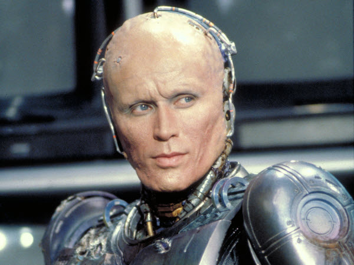 | Peter Weller | Officer Alex J. Murphy / RoboCop |
| Nancy Allen | Officer Anne Lewis | |
| 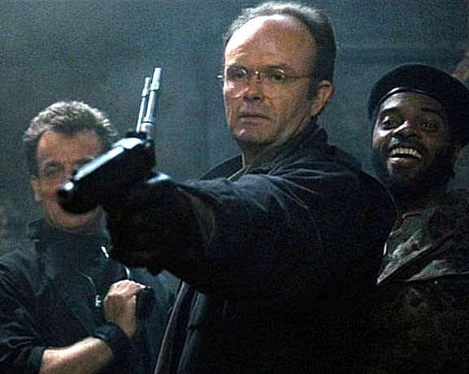 | Kurtwood Smith | Clarence J. Boddicker |
| 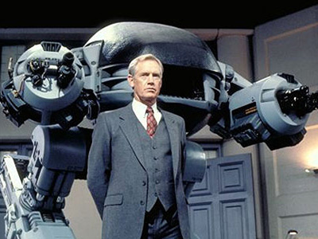 | Ronny Cox | Dick Jones |
| 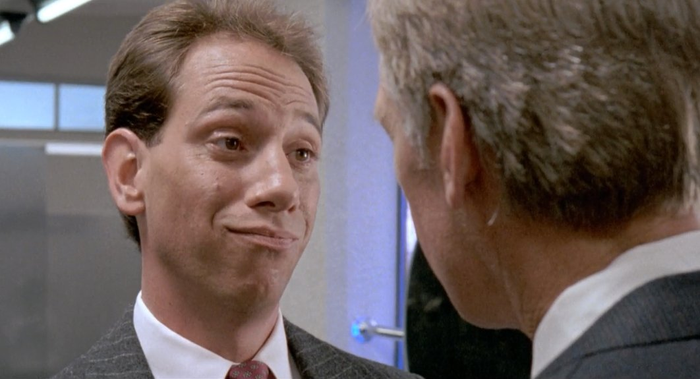 | Miguel Ferrer | Bob Morton |
DIRECTOR
Paul Verhoeven
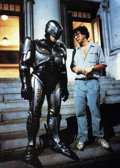Paul Verhoeven graduated from the University of Leiden, with a degree in math and physics. He entered the Royal Netherlands Navy, where he began his film career by making documentaries for the Navy and later for TV. In 1969, he directed the popular Dutch TV series, Floris (1969), about a medieval knight. This featured actor Rutger Hauer, who has appeared in many of Verhoeven's later films. Verhoeven's first feature, Diary of a Hooker (1971) (trans. "What do I See?"), was released in 1971. However, it was his second, Turkish Delight (1973), with its combination of raw sexuality and a poignant story-line, that gained him great popularity in the Netherlands, especially with male audiences. When his films, especially Soldier of Orange (1977) and The 4th Man (1983), received international recognition, Verhoeven moved to the US. His first US film was Flesh+Blood (1985) in 1985, but it was RoboCop (1987) and, especially, Total Recall (1990) that made him a big box office success. Sometimes accused of portraying excessive violence in his films, Verhoeven replies that he is only recording the violence of society. Verhoeven has co-scripted two of his films: Soldier of Orange (1977) and Flesh+Blood (1985). He also directed an episode of the HBO Deadly Nightmares (1983) TV series. Several of his films have been photographed by Jost Vacano, including the hit cult film, Starship Troopers (1997), starring Casper Van Dien.
THE MOVIE
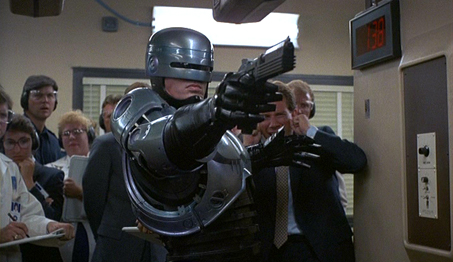A cybernetic organism, or cyborg as they are more commonly known, is a fusion of living tissue and machine. The cyborg’s construction represents a synthesis of reality and fiction, the real and the imagined amalgamated into a single being. By its very nature, the cyborg is a physical embodiment of irony, two opposites working together in a solitary manufactured form. How appropriate then that Paul Verhoeven’s film RoboCop, while an exciting and rousing action picture, also happens to be a clever satire on dehumanization through technological advancements, and in that the resubjectification of humanity as a complete organism through its mechanization and industrialization. Released in 1987, RoboCop embraces a bold and bloody preview of a fascist future in its science-fiction genre touches, but underneath the fantastical and actionized scenario exists a humorous discussion about how modern society defines humanity. Through sharp and comical observation, Verhoeven’s view of America caricatures extreme evolutions in capitalism, media influence, desensitization to violence, gentrification, and our perception of heroes, each in service of a greater conversation about identity and culture. Although easily overlooked as a product of 1980s excess entertainment, the film remains a thoughtful and influential cultural commentary.
Before exploring the film, let us first consider the cyborg itself and how it relates to human identity, as these theories will inform the later discussion of RoboCop as a major cultural reflector. The term “cyborg” was first conceived in 1960 by scientists Manfred E. Clynes and Nathan S. Kline, who imagined a human being whose body would be enhanced by technology to survive in the realms of outer space without need of a space suit. From this conception and further hypothetical scientific analyses emerged countless science-fiction writings, from the engineered Replicants in Philip K. Dick’s Do Androids Dream of Electric Sheep? to the cybernetically enhanced species the Borg in Star Trek: The Next Generation. Also emerging were several considerations of the cyborg as a reflection of the late twentieth century (and beyond) way of life. In her essay A Cyborg Manifesto, a rethinking of feminism through the metaphor of a cyborg, sociologist Donna Haraway observes “The cyborg is resolutely committed to partiality, irony, intimacy, and perversity. It is oppositional, utopian, and completely without innocence. No longer structured by the polarity of public and private.” Haraway argues that the cyborg in popular culture reflects the interplay of materialism and idealism, the duality of modern society, and the search for understanding one’s self as a body and identity. The cyborg is an incorporation of countless, and in some cases untraceable, stimuli that join together to form a confused whole.
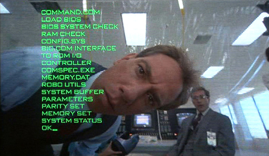As part animal and part machine, the cyborg’s world and existence share in the natural and invented. Anyone who wears glasses, survives from a pacemaker, has pins to repair a fractured bone, uses a hearing aid, or requires any other medical device to function or survive is a cyborg, both part of the natural world and supported by technology. Without these sometimes small, sometimes considerable medical advancements, the broken down physicality of their users would signify the shell of person, nonfunctional or busted, incomplete, less than human. Curious then that we are not “complete” or “functional” without the support of some artificial do-dad to enhance our physical state beyond what Nature intended for us. Nature, as it would seem, is not human by modern definitions. A simulation of humanity completed by a medical device, however, results in a person becoming more human than a person with an obvious defective body part or biological process. Our acceptance of these commonplace medical cyborgs suggests that our modern definition of humanity has been distanced from natural humanity. In turn, cyborgs cling to their human components and strive to offer a reproduced vision of what it means to be human; any trace of human authorship is clung to, desperately. But this is self-deception that denies the corruption which occurs through a process of human interpretation by way of technological application. When so many of us are cyborgs, the cyborg can no longer be viewed as part human, part machine, and in no part whole; rather, it must be seen as the modern definition of humanness. Anything beyond a cyborg is impossible idealism, as purity is a contradictory notion in defining one’s identity.
RoboCop is the story of Alex Murphy (Peter Weller), a policeman in the ruinous dystopia of Detroit. On his first patrol with fellow officer Anne Lewis (Nancy Allen), he engages a sadistic gang led by crimelord Clarence Boddicker (Kurtwood Smith). Murphy is shot to pieces and soon pronounced dead. Meanwhile, the chairman of conglomerate Omni Consumer Products (OCP), known as the Old Man (Dan O'Herlihy), wants to begin construction on a citywide overhaul to create a utopian “Delta City”, but the first step is ridding Detroit of its unruly criminal element. Top executive Dick Jones (Ronny Cox) pitches an “urban pacifier” enforcement droid called ED-209, which is riddled with glitches. But young shark Bob Morton (Miguel Ferrer) suggests his “robocop” program as an alternative, a cyborg design ready for testing “as soon as some poor schmuck volunteers.” Murphy’s remains become the spare parts for RoboCop, his memory seemingly erased and replaced with programmed law enforcement Directives: 1) Serve the public trust, 2) Protect the innocent, and 3) Uphold the law. A fourth directive appears on RoboCop’s first-person viewscreen but remains classified. When he’s unleashed on Detroit, his robotically unswerving sense of duty creates a media sensation that leads to a decrease in crime and a police force that fears being replaced by machines. But RoboCop is not the perfect machine his creators intended; inside linger Murphy’s memories of his former family and violent death.
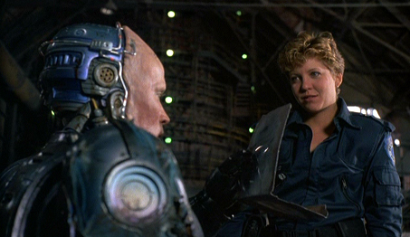Recognizing her late partner, Lewis confronts RoboCop and asks his name, but when he cannot respond she says, “Murphy, it’s you.” An outpouring of memories flow into RoboCop’s head, and all at once he seeks out Boddicker and arrests him, inciting Boddicker’s confession that he’s on Jones’ payroll. Though Murphy wants to strangle his killer, RoboCop’s programming doesn’t allow it. Instead, he hauls Boddicker downtown for booking, and then he confronts Jones and plans to arrest him only to discover Directive 4, a measure which prevents RoboCop from arresting any OCP executive. Jones retaliates with ED-209, arranges the release of Boddicker to have Morton killed, and orders the police to destroy RoboCop. Badly damaged and barely escaping with the help of Lewis, our hero repairs himself and reveals to Lewis that a part of him is still Murphy. He wonders where his family is, and she explains that Murphy’s wife and son have left town, believing him dead. Together, RoboCop and Lewis take down Boddicker’s crew. Afterward, RoboCop confronts Jones in a board meeting attended by the Old Man, exposing Jones’ association with Boddicker and his attempt at a hostile takeover of OCP. The Old Man responds directly by firing his company’s traitor and therein quashes Directive 4, which permits RoboCop to kill Jones. His life and company just saved, the Old Man asks our hero, “Nice shootin’ son, what’s your name?” RoboCop replies, “Murphy.”
Originally, screenwriters Ed Neumeier and Michael Miner set out to write the story of a robot cop, inspired by Blade Runner (1982, based on Dick’s aforementioned book) but more so by Marvel Comics’ “space knight” superhero Rom, a robotic alien soldier whose “humanity” is transferred within the housing of bionic armor (several issues of Marvel’s ROM: Spaceknight can be seen throughout the film). Their story demanded a human element and soon moved away from a robot cop and developed into the story of a cyborg. And since Orion Pictures had already experienced great success with cyborgs on James Cameron’s The Terminator, they agreed to release the film. Several directors were approached but few could get beyond the film’s title; the name “RoboCop” sounded corny and absurd, like countless other low-budget action movies from the 1980s. When the script came to Dutch director Paul Verhoeven, whose first English-language film Flesh+Blood (1985) was also released by Orion, he threw it away thinking it “rubbish”, until his wife picked up the script and, in reading it, realized layers of social commentary and satire were underneath the basic action movie scenario. Verhoeven agreed to make the film and months of preparation commenced, largely based around how special FX artist Rob Bottin (whose work on John Carpenter’s 1982 stunner The Thing was already renowned)would achieve the RoboCop suit and armor.
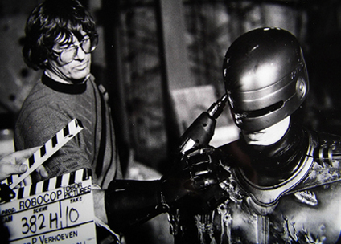Casting Murphy required a thinner actor to fit in the RoboCop suit and so initial prospects such as Arnold Schwarzenegger and Michael Ironside were eliminated in favor of Peter Weller, star of the 1984 cult flop The Adventures of Buckaroo Banzai Across the 8th Dimension! To prepare, Weller trained extensively alongside an instructor from Juilliard’s movement department to master his character’s hulking robotic motions. But the design of the RoboCop suit would be argued over for months before the look was approved. Bottin’s original rounded and aerodynamic designs were very much similar to the final design, harkening back to the robotic icon Maria from Fritz Lang’s Metropolis (1927). But several members of the production, Verhoeven included, felt the suit should be more angular and futuristic, like Japanese robot designs. Bottin’s design eventually won out, as it more than the others reflected the humanness of the subject within. The sleek look of RoboCop’s suit, made of black Kevlar and purple-touched metals, appears robotic enough, but the lower half of Weller’s face is exposed and, along with the actor’s subtle physical movements, suggests the human trapped beneath this cold exoskeleton in understated displays of emotion and hesitation. For the rest of his cast, Verhoeven went against type by hiring Ronny Cox and Kurtwood Smith, both known for “nice guy” roles, to play the film’s central villains. Nancy Allen also changed her image from Brian De Palma’s strawberry curlicued sexpot (in Carrie, Home Movies, Dressed to Kill, and Blow Out) to a tough, short-haired, completely desexualized cop.
Under Verhoeven’s ambitious helm, the challenging technical production went over-budget and over-schedule, but featured dozens of in-camera effects and remarkable visuals, which to this day are nothing short of astonishing. The shoot took place in Dallas, and Rocco Gioffre’s flawless matte paintings complete a futuristic image of Detroit with tall skyscrapers and an expansive cityscape. Stop-motion animation was used to achieve the ED-209 sequences, while Bottin’s makeup work outside of the RoboCop suit was tested to its limits. In Murphy’s gristly death sequence, his hand is shockingly blown to mush by a shotgun blast; the cop then takes a bullet to the head in a camera swoop that begins facing Bottin’s convincing Murphy anamatronic straight-on, and then rotates around to witness the blowback. Another impressive Bottin scene features one of Boddicker’s goons (Paul McCrane) doused by toxic waste; the resultant mutation, Bottin’s designs inspired by Rick Baker’s makeup FX on The Incredible Melting Man (1977), sags along until a car strikes him, and his head and body burst over the windshield like overfilled water-balloons. Technical expertise aside, Verhoeven’s necessity for over-the-top violence to denote the film’s satiric elements earned RoboCop an X-rating from the MPAA upon initial screenings, requiring several reductions in bloodshed and gore before it was granted an R-rating. When it was finally released, critical reception was overwhelmingly positive and the $13 million production earned more than $53 million in box-office receipts. The next year, RoboCop was Oscar-nominated for Best Sound and Best Editing, and also won a “special achievement” Oscar for its Sound Effects Editing. Over the next decade, the film’s success produced an increasingly dull franchise consisting of two sequels (in 1990 and 1993), several television series (both live-action and animated), videogames, comic books, and a 2014 remake—none of them as sharp as the original.
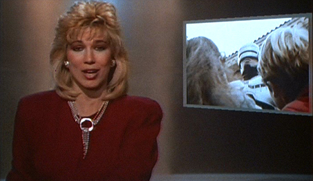In the initial review by its staff, Variety observed “RoboCop is as tightly worked as a film can be, not a moment or line wasted.” How completely accurate. Every aspect of the film works in unison, the characters, plotting, music, editing, and production efficient and economic in their service of the overall story. Verhoeven does not lose himself in the film’s tempting technophilia; rather, he carefully places moments of riotous irony throughout to reflect the warped conditions of the film. From the first images of RoboCop, Verhoeven immerses us in newscasts (by Leeza Gibbons and Casey Wong) about the state of this aggressive, militarizing world. Their news is presented with a smile while contrastingly graphic reports on the alarming geopolitical climate flash on our screen. Verhoeven allows the viewer to grow immersed in the story’s dystopia, but he also asks that we step back and reflect on that world with these newscasters and their nightly stories, interrupted occasionally by mock-commercials. One such commercial, a spoof of Milton Bradley’s Battleship, is called “Nuke ‘Em” and parodies escalating Cold War tension between the United States and Russia; another for “The Family Heart Center” sells the best in mechanized body parts by listing off the technical specs for designer heart transplants—the spokesperson adds “and remember, we care” almost as an afterthought. Verhoeven would use a similar device to distance and parody his film’s extreme world in Starship Troopers (1997); that entire film is presented as piece of ironic, interactive pro-war propaganda (“Would you like to know more?”).
As a character, RoboCop is very much a product of his ironic world, and that world serves as a cyborg metaphor, a construction of irony itself. Haraway argues that cyborgs are “the illegitimate offspring of militarism and patriarchal capitalism,” and this description fits RoboCop, a film steeped in an intentionally exaggerated dose of Reagan-era politics and capitalistic drives. Early in the film, we learn the massive corporation OCP has purchased and privatized the Detroit Police Department if only to test experimental weaponry that would later be sold to a larger contractor: the American military. But their “urban pacifier” ED-209 is just another ineffectual hunk of American machinery, not dissimilar from and certainly mirroring the American automotive industry once so prevalent in the film’s setting of Detroit. As if to save a dying man by replacing parts of him with machines, OCP’s ultimate mission is to tear down old Detroit and rebuild it into “Delta City”, to repair the crumbling sprawl into a better, superior metropolis through the process of gentrification—out with undesirables, in with the elite—which itself is an act of identity reformation not unlike the creation of a cyborg. Indeed, even the villains plotting the film’s vast conspiracy represent cyborg relations, the ironic assembly of savage criminals teamed with a high-class capitalist to form a company of villains—the pairing of base humanity in Boddicker’s sicko gang with the technological capacity of Dick Jones and his impressive (albeit faulty) ED-209. Each aspect of RoboCop as a story takes a contradictory shape and therein defines itself as the very subject of the film: the ironic cyborg.
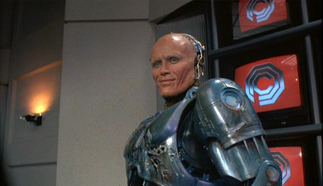Given the cyborg’s conflicted state, Robocop cannot help but be a sympathetic, if not a tragic construction weighted by his lingering humanity—very much like Frankenstein’s monster after he realizes that he’s an abomination of Nature. Furthermore, Verhoeven, ever fascinated with Christian symbolism, sought to depict Murphy’s journey from cop to RoboCop in a Christ-like metamorphosis, from his arms-outstretched Crucifixion in his bloody death to his Resurrection from the dead some days later, renewed in body and soul. Verhoeven even injected a scene in the millworks finale where it appears as though RoboCop walks on water. Such potent symbolism unconsciously enhances our hero’s effect as an iconic, emblematic image. But RoboCop is less a deity than a metaphor for post-modern humanity. Saddening scenes follow Murphy as he returns to an empty home, on Primrose Lane no less, to find it empty and populated only by memories of his once-happy life. As RoboCop, Murphy and his mechanization signify our own “loss of innocence in our origin,” our conflicting ideals about what it means to have a specific gender, race, or sexuality—an identity. The cyborg’s physiological overhaul reflects the post-modern human being, as through our own politicization, social relations, and physical manipulation by artificial means, humanity has been redefined and distorted to such an extent that it’s impossible to conceive what it means to be “human” anymore. We are all ironic, layered constructions searching for that spark of purity within us, and perhaps this is why Murphy remains so relatable, because he finds it.
Through ultra-violence, hilarious satire, fascinating robotics, impressive special FX, and the production’s incredible visual presentation, Paul Verhoeven made a cultural commentary that is still relevant today, if not more so given our culture’s increasing reliance on and shaping by technology. RoboCop is a singularly thoughtful action film, more than any action picture called RoboCop has any right to be. It considers the process of redefining and “improving” the identity of a thing by transforming it through perceived advancements, and how that process, while certainly a development of a kind, also denies the origins of the reformatted subject. This is the equally destructive and creative course of humankind, a trajectory beset by the developmental myth that progress denotes improvement. The film acknowledges our acceptance of the human identity’s technological integration as normalcy, but also recognizes the importance of origins, the humanity underneath the metal sheen. Through the course of this cautionary tale about technology, RoboCop is no longer viewed as a machine but a man, just as valid as any other man, if not more so because of Murphy’s now exceptional physicality and distinctive flair for law enforcement. Murphy’s eventual conquest of his technological self is a victory for humanity in the modern age; but, as with most aspects of RoboCop, our hero’s victory is satirical. Murphy’s is a victory in which the faintest human traces are celebrated as a triumph to ironic effect; his recollection of incomplete memories and his human face stretched thin over a robotic body are not a victory, but a harsh yet comical reflection of a cyborg culture ever redefining itself through technology.